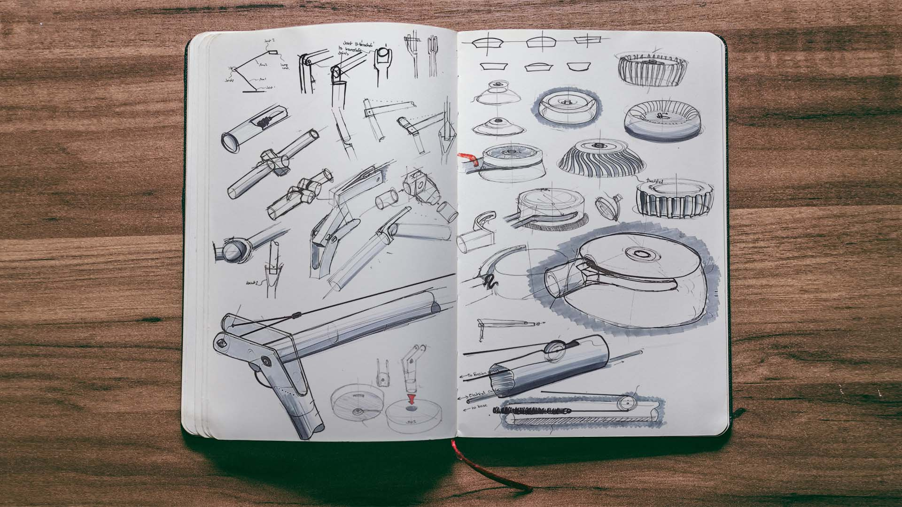

TL;DR
I started studying Industrial Design in 2012 and proceeded to have a career in the field until around 2020. I wonder what happened then.... 🤔 In that time I designed range of objects, from consumer electronics concepts, to high-end furntiure, and even food packaging for some of the worlds biggest airlines. Now, this isn't an ID portfolio and I'm much to lazy to try and create wonderful case studies for even a handful of my projects but I feel I'd be remiss if I didn't at least acknowledge my first career, particularly since it was a major part of shaping me as a designer today. So please enjoy this wall of images and reach out if you have any questions!